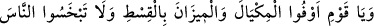
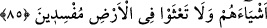
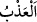
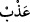

kurucusu Medyen’in adı ile adlandırılmıştır. Allah, Medyen kabilesine ya da Medyen
şehri sâkinlerine de nesep bakımından kardeşleri, yâni kendilerinden biri olan Şuayb’ı
peygamber olarak göndermiştir. Şuayb’ın tam adı şöyledir: Medyen oğlu Yeşcur oğlu
Mikil oğlu Şuayb.
“Dedi ki: “Ey kavmim,” sadece “Allah’a kulluk edin” ona hiçbir putu ortak
koşmayın, çünkü “sizin O’ndan başka tanrınız yoktur.”
Bütün peygamberlerin tevhîd konusunda söyledikleri hep aynıdır. Hepsi de yegâne
ilâh olan Allah’a çağırır. İşte Şuayb (a.s.) da kavmine önce tevhîdi emrediyor. Çünkü
işin aslı ve özü tevhiddir. Sonra helak olmalarını gerektireceği için onları
alışageldikleri ‘ölçü ve tartıyı eksiltme’ davranışından men ederek şöyle diyor:
“Ölçüyü ve tartıyı eksik yapmayın.” Yâni ölçü ve tartı âletlerini eksik tutmayın.
Medyen kavminin, biri diğerinden daha büyük olmak üzere iki ölçü, iki de tartı birimi
vardı. Başkalarından bir şey alırken büyük ölçekle tam olarak tartmalarını isterler,
kendileri başkalarına bir şey tarttıklarında ise küçük ölçeği kullanarak eksik tartarlardı.
Söylenmek istenen şudur: İnsanların haklarını eksiltmeye tevessül ederek ölçeğin
hacmini normalden eksik tutmayın. Ağırlık ölçüleri için de durum böyledir. Bu ifâde,
ölçü ve tartı aletleri zikredilip ölçülüp tartılan şeylerin kastedilmesi kabilinden de
olabilir.
Günümüzde her iki eksiltme şekli de sanki bu hâin inkârcılardan mîras kalmışçasına
yaygındır.
“Ben sizi bolluk içinde görüyorum” Gerçekten ben sizi bu şekilde eksik ölçekle
vermekten müstağnî kılacak kadar zengin ve bolluk içinde görüyorum. Yâni, fakir ve
muhtaç değilsiniz ki hıyânet etmenize bir sebep olsun. Belki nimet içinde ve zenginsiniz.
Hak Teâlâ’nın hakkını edâ etmek insanın kendi malından fayda görmesidir. Yoksa onun
bunun hakkını eksik vermek değildir.
“Ve ben” bu eksiltmeden vazgeçmediğiniz takdirde “gerçekten sizin için kuşatıcı”
yani hiçbirinizi dışarıda bırakmayacak “bir günün azabından korkuyorum.” Bu
azabdan maksad kıyamet gününün azâbı ya da hepsinin kökünü kazıyacak olan azabdır.
‘Kuşatıcı olma’ azabın vasfı olduğu halde burada azâbı da içine aldığı için gün kuşatıcı
olmakla vasfedilmiştir. Öyleyse burada mecâzî bir isnad var demektir.
Arapçada azâb kelimesinin aslı, menetme; giderme mânâsındaki 'den gelmektedir.
Susuzluğu giderdiği için suya da ‘ ’ denmiştir. Azâb ise cezalandırılan kişileri
işledikleri suçlara dönmekten, başkalarını da bu suçları işlemekten menettiği,
alıkoyduğu için ‘azâb’ adını almıştır.